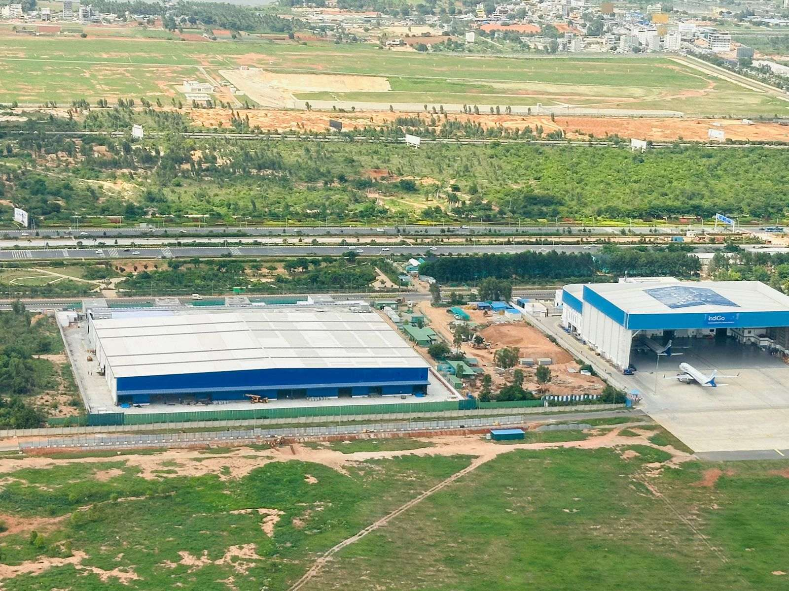

Insights
Notes from the site.
Thinking from SPC's project leaders on turnkey delivery, regulatory navigation, and what makes industrial builds succeed.

Delivery Models
Why turnkey wins for industrial campuses
Multi-contractor coordination is where most projects bleed time and money. Here's what one GC accountability changes.

Construction Tech
PEB explained: when, why and how much
Pre-Engineered Buildings cut schedule by 30–40% on the right project. The wrong project, they cost more.

Liaison & Approvals
Karnataka permit timelines: a realist's view
What KIADB, BBMP and pollution control approvals actually take — and how to sequence them without losing weeks.